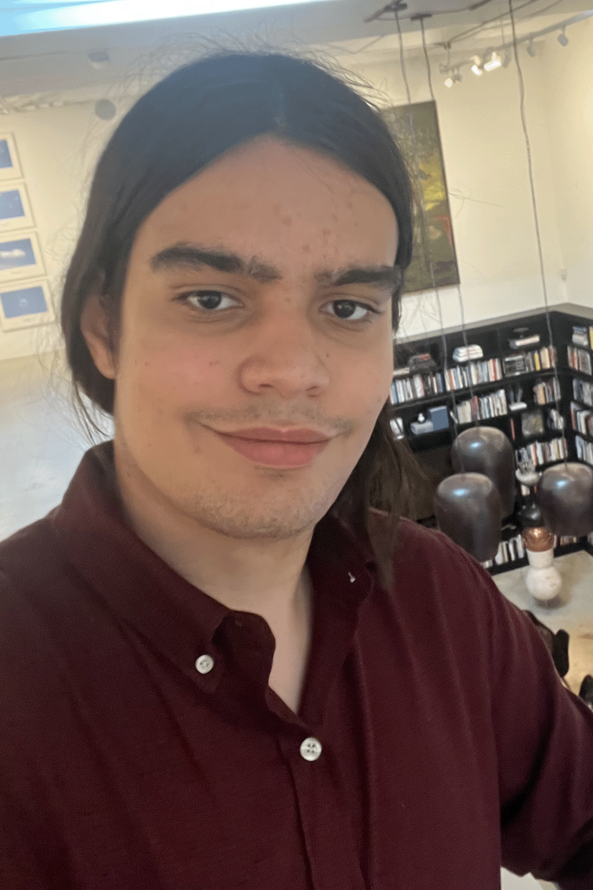

Hi, I’m Diego Blanco, a proud graphic designer and 2D artist passionate about turning ideas into visual experiences. My work combines creativity, design, and illustration to create artwork that is expressive, memorable, and meaningful. I enjoy exploring different styles and bringing concepts to life through graphic design and 2D art. I’m always looking for new creative challenges and opportunities to grow, collaborate, and create something unique. Whether you need graphic design, illustration, or a fresh visual direction for a project, I’m available for open work and new opportunities. Take a look around my portfolio, explore my work, and feel free to reach out. I’m always excited to see where the next creative project can lead.